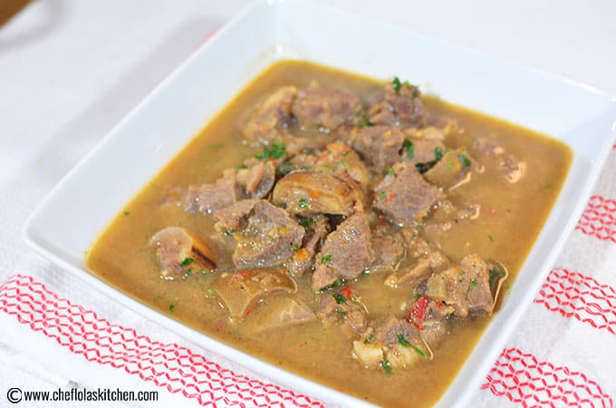

Pepper Soup
Description
A hearty African soup made with Goat meat cutlets or chunks, pepper soup spice, and other beautiful condiments. This soup certainly delivers the big, bold African flavors you will love.
Ingredients
- Uziza leaves
- Goat meat
- Crayfish
- Pepper soup spice
- Red chilli flakes
- Ginger powder
- Salt
- Scotch bonnet
- Seasoning cube
- Water
Steps
- Cut the goat meat into cutlets. Then rinse thoroughly, transfer the meat into the pot, add salt, seasoning cube, habanero peppers and half of the onion and cook for 30 minutes.
- Add the pepper soup spice, red chilli flakes, ginger powder, the remaining grated onion, and crayfish. Leave it to cook for another 10 minutes.
- Stir in the uziza leaves and let it simmer for another 5 minutes. Serve hot with yam, rice, bread and more.